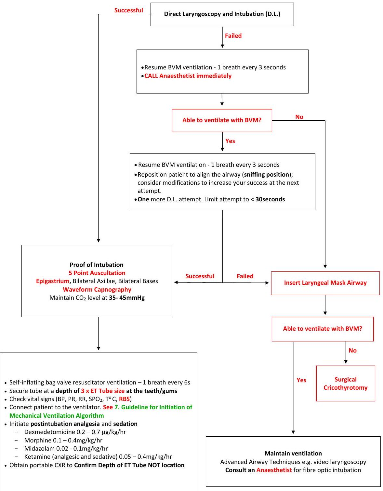
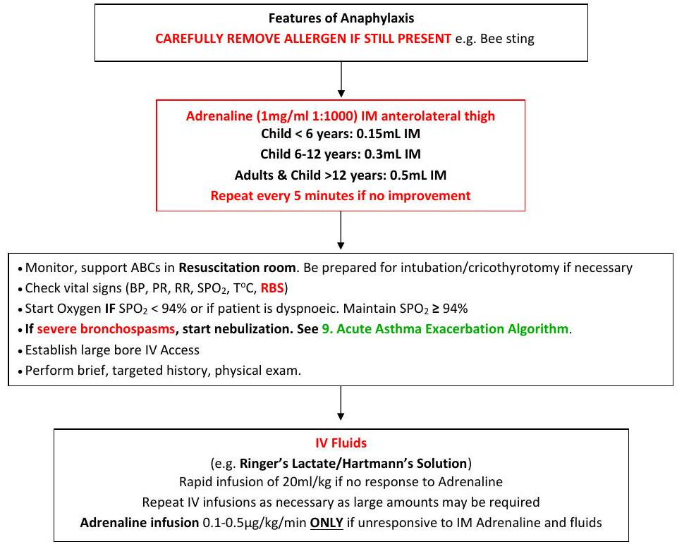
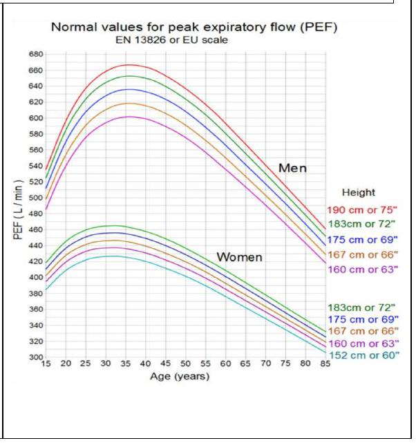
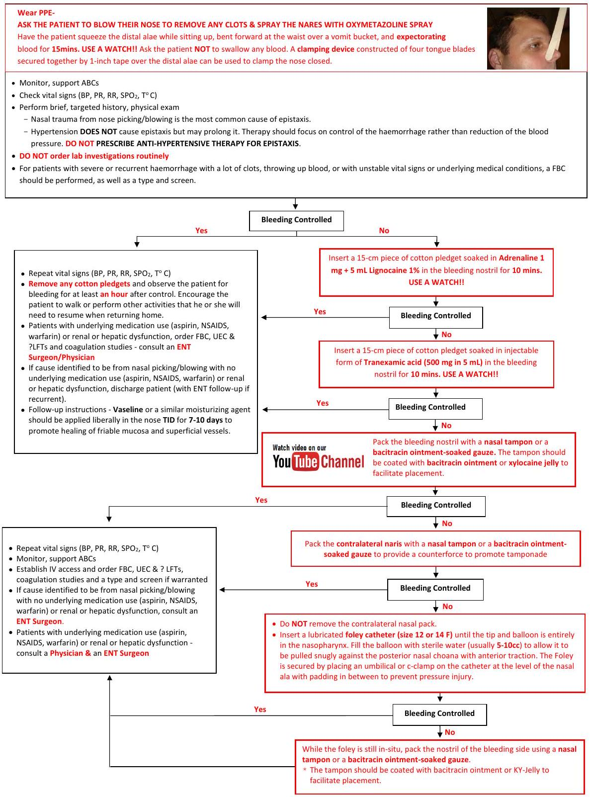

Airway and Breathing Emergencies
5. Rapid Sequence Intubation/Airway Algorithm
This clinical pathway is intended to supplement, rather than substitute for, professional judgment and may be changed depending upon a patient's individual needs. Failure to comply with this pathway does not represent a breach of the standard of care.
| Identify Predictors of Difficult Intubation (LEMON) - Look for external markers of difficulty of BVM and Intubation - Evaluate the 3-3-2 rule - Mallampati score ≥ 3 - Obstruction/Obesity - Reduced Neck Mobility If a difficult airway is predicted, IMMEDIATELY consult a clinician experienced in airway management and intubation before proceeding. |
MALE MESS - Mask - Airways (oral and nasal) - Laryngoscopes, Laryngeal Mask Airway (LMA) - Endotracheal tubes - Adult Males 8F, Females 7.5F; Child >1 year (Age/4) + (4(uncuffed) or 3.5(cuffed)) - Monitoring (pulse oximetry, ECG, capnography), Magill Forceps - Emergency drugs/trolley - Self-inflating bag valve resuscitator; - Suction, Stylet, Bougie - Plentiful oxygen supply |
|
Pre-oxygenation - Attach oxygen via nasal prongs. Turn up to MAXIMUM if patient is unconscious or after sedation. Keep this for the entire intubation process. - Spontaneously breathing patient - Position patient as below and allow at least 5 mins of spontaneous breathing with a tight-fitting non-rebreather facemask at MAXIMUM and continue until the patient stops breathing after sedation/paralysis: Avoid positive pressure ventilation if possible - Patient not breathing or not breathing adequately- Use a Bag-Valve-Mask (BVM) with a reservoir and O2 at 15 L/min to provide 1 breath every 6 seconds (synchronized to the patient's breaths) until you can achieve and sustain the highest possible SpO2 |
|
|
Position the patient Ensure you have 360° acccess to the patient - Belt/Belly Height - Head at or just above belt/belly level - HoP up - Head of Patient up to Head of Bed - HoB up - Head of Bed up 30°; Reverse trendelenburg in High BMI, Late Pregnancy, Spinal Immobilisation - Face Plane parallel to Ceiling (or just 10° tilt back) & Ear level to Sternal Notch Assistants ready to help add or maintain external laryngeal manipulation, head elevation, jaw thrust, mouth opening |
|
| Paralysis with Induction | |
| Sedatives | Dose |
|---|---|
| Ketamine (Ketamine is preferred for patients with hemodynamic instability or renal insufficiency) | 2 mg/kg IV |
| Midazolam | 0.15 to 0.2 mg/kg IV (decrease dose in elderly and critically ill patients) |
| Propofol (titrate the dose) | 1 to 2.5 mg/kg IV (decrease dose in elderly and critically ill patients) |
| Neuromuscular Blocking (NMB) Agents | Dose |
| Succinylcholine (depolarizing NMB) Contraindications: - Hyperkalaemia e.g. renal failure - Organophosphate poisoning - Delayed severe burns - Prolonged crush injuries |
1.5 mg/kg IV (adults) 2 mg/kg IV (infants) 3 mg/kg IV (new-borns) |
| Rocuronium (nondepolarizing NMB) Rocuronium has a short duration which generally makes it the preferred of the nondepolarizing neuromuscular blockers for ED RSI |
1.2 mg/kg IV (shorter onset with longer duration) |
| Pass the tube /Laryngeal Mask Airway (LMA) Limit attempt to < 30 seconds. Proceed down the algorithm after 30 seconds |
|

| - Self-inflating bag valve resuscitator ventilation - 1 breath every 6s - Secure tube at a depth of 3 x ET Tube size at the teeth/gums - Check vital signs (BP, PR, RR, SPO2, T °C, RBS) - Connect patient to the ventilator. See 7. Guideline for Initiation of Mechanical Ventilation Algorithm |
Resume BVM ventilation - 1 breath every 3 seconds See 6. Failed Intubation Algorithm |
- Initiate postintubation analgesia and sedation
- Morphine 0.1-0.4 mg/kg/hr
- Ketamine (analgesic and sedative) 0.05-0.4 mg/kg/hr
- Midazolam 0.02-0.1 mg/kg/hr
- Dexmedetomidine 0.2-0.7 µg/kg/hr
- Obtain portable CXR to Confirm Depth of ET Tube NOT location
6. Failed Intubation Algorithm
This clinical pathway is intended to supplement, rather than substitute for, professional judgment and may be changed depending upon a patient's individual needs. Failure to comply with this pathway does not represent a breach of the standard of care.
7. Guidelines for Initiation of Mechanical Ventilation Algorithm
This clinical pathway is intended to supplement, rather than substitute for, professional judgment and may be changed depending upon a patient's individual needs. Failure to comply with this pathway does not represent a breach of the standard of care.
*Consider non-invasive ventilation for Pulmonary Oedema, COPD, Pneumonia, ARDS, Preintubation oxygenation
Additional Settings
Pressure support - 8-10 cmH2O
Inspiratory trigger - 2 cmH2O below the set PEEP
i times - Adults 1 sec; Toddlers/Children 0.7 sec; Neonates 0.5 sec
Abbreviations: SIMV, Synchronised Intermittent Mandatory Ventilation; PRVC, Pressure Regulated Volume Control; VT, Tidal Volume; PBW, Predicted Body Weight; PEEP, Positive End Expiratory Pressure; PIP, Peak Inspiratory Pressure
The Crashing Intubated Patient (Peri-Arrest or Arrest):
DOPES then DOTTS: The first mnemonic is how to diagnose the problem and the second mnemonic is how to fix the problem:
Diagnosing the Problem:
D = Displaced Endotracheal Tube or Cuff
O = Obstructed Endotracheal Tube: Patient biting down, kink in the tube, mucus plug
P = Pneumothorax
E = Equipment Check: Follow the tubing from the ETT back to the ventilator and ensure everything is connected
S = Stacked Breaths: Auto-PEEP. Patient unable to get all the air out from their lungs before initiating the next breath. Inspiratory time is much shorter than expiratory time (I/E ratio is anywhere from 1 to 3 or 1 to 4)
Fixing the Problem (Once you commit to this, do every step even if you fix the problem with one of the earlier letters):
D = Disconnect the Patient from the Ventilator: This fixes stacked breaths by decreasing intra-thoracic pressure and improving venous return
O = O2 100% Bag Valve Mask: The provider should bag the patient not anyone else because this lets you get a sense of what the potential problem is. Look, Listen, and Feel
- Look: Watch the chest rise and fall, look at ETT and ensure it is the same level it was at when it was put in
- Listen: Air leaks from cuff rupture or cuff above the cords; Bilateral breath sounds; Prolonged expiratory phase
- Feel: Feel the pressure of pilot balloon of endotracheal tube, crepitus; How is the patient bagging (Hard to bag or too easy to bag)
T = Tube Position/Function: Suction catheter to ensure tube is patent; Can also use bougie if you don't have suction catheter, but be gentle (If to aggressive can cause potential harms); Ensure the tube is at the same level it was at when it was put in
T=Tweak the Vent: Decrease respiratory rate, decrease tidal volume, decrease inspiratory time. Biggest bang for your buck is decreasing the respiratory rate. This may cause respiratory acidosis (permissive hypercapnia)
S = Sonography: You can diagnose things much faster than waiting for respiratory therapist to come to the bedside or waiting for stat portable chest x-ray to be done.
8. Anaphylaxis Algorithm
This clinical pathway is intended to supplement, rather than substitute for, professional judgment and may be changed depending upon a patient's individual needs. Failure to comply with this pathway does not represent a breach of the standard
A patient meets the definition of anaphylaxis when ANY 1 of the following 3 criteria are fulfilled:
- Acute onset of mucocutaneous signs AND 1 of the following:
- respiratory compromise (wheezing-bronchospasm, dyspnoea, stridor, hypoxemia),
- hypotension (syncope), or
- hypotonia.
- Rapid onset of 2 of the following after exposure to likely allergen:
- mucocutaneous signs,
- respiratory compromise,
- hypotension, or
- persistent gastrointestinal symptoms.
- Hypotension after exposure to a known allergen.
Patients with simple allergic reactions who DO NOT meet the criteria for anaphylaxis may be managed similarly WITHOUT the use of adrenaline.
Patients with risk factors for severe and potentially fatal anaphylaxis may need careful observation for up to 24 hours:
- Delayed administration of epinephrine
- Asthmatic component to their anaphylactic reaction
- Previous history of biphasic reactions
- Cardiovascular disease
- Possibility of continuing absorption of allergen
- Poor access to emergency care
- Presentation in the evening or at night
- Severe reactions with slow onset caused by idiopathic anaphylaxis
Patients diagnosed with anaphylaxis who are not high-risk should be discharged in the care of others with clear indications for immediate return to the emergency department (ED).
9. Acute Asthma Exacerbation Algorithm
This clinical pathway is intended to supplement, rather than substitute for, professional judgment and may be changed depending upon a patient's individual needs. Failure to comply with this pathway does not represent a breach of the standard of care.
Acute Asthmatic Attack
- Monitor, support ABCs
- Start Oxygen IF SPO2 <92%. Maintain SPO2 ≥ 92%; Oxygen should be provided to all patients with severe asthma, even those with normal oxygenation.
- Perform brief, targeted history, physical exam (auscultation, use of accessory muscles, PR, RR)
- Initiate treatment of underlying cause of exacerbation
- Check Peak Expiratory Flow (PEF) as per PEF Chart below and record predicted or best PEF (%) in patient's clinical notes.
| Medication | Dose | Comments |
|---|---|---|
| Inhaled SABA | ||
| Salbutamol | ||
| Nebulizer solution (0.63 mg/3 mL, 1.25 mg/3 mL, 2.5 mg/3 mL, 5.0 mg/mL) | 5 mg every 20 min for 3 doses, then 2.5-10 mg every 1-4 h as needed, or 10-15 mg/h continuously | Only selective β-agonists are recommended. For optimal delivery, dilute aerosols to minimum of 3 mL at gas flow of 6-8 L/min. Use large-volume nebulizers for continuous administration. May mix with ipratropium nebulizer solution. |
| pMDI (90 µg/puff) | 4-10 puffs every 20 min up to 4 h, then every 1-4 h as needed | In mild to moderate exacerbations, pMDI plus spacer is as effective as nebulized therapy with appropriate administration technique and coaching by trained personnel. |
| Systemic (Injected) β2-Agonists | ||
| * Adrenaline 1:1,000 (1 mg/mL) | 0.3-0.5 mg SC every 20 min for 3 doses | No proven advantage of systemic therapy over aerosol |
| Anticholinergics | ||
| Ipratropium bromide | ||
| Nebulizer solution (0.25 mg/mL) | 0.5 mg every 20 min for 3 doses, then as needed | May mix in same nebulizer with salbutamol. Should not be used as first-line therapy; should be added to SABA therapy for severe exacerbations. The addition of Ipratropium has not been shown to provide further benefit once the patient is hospitalized. |
| pMDI (18 µg/puff) | 8 puffs every 20 min as needed up to 3 h | Should use with spacer. Studies have examined Ipratropium bromide MDI for up to 3 h. |
| Ipratropium with salbutamol | ||
| Nebulizer solution (Each 3-mL vial contains 0.5 mg ipratropium bromide and 2.5 mg salbutamol.) | 3 mL every 20 min for 3 doses, then as needed | May be used for up to 3 h in the initial management of severe exacerbations. The addition of ipratropium to salbutamol has not been shown to provide further benefit once the patient is hospitalized. |
| MDI (Each puff contains 18 µg Ipratropium bromide and 90 µg salbutamol.) | 8 puffs every 20 min as needed up to 3 h | Should use with spacer. |
| Systemic Corticosteroids | ||
| Prednisone | 40-80 mg/d in 1 or 2 divided doses until PEF reaches 70% of predicted or personal best | For outpatient "burst," use 40-60 mg in single or 2 divided doses for a total of 5-10 d. |
| Hydrocortisone | 200 mg IV then 1 mg/kg/dose IV QID | Only if patient cannot tolerate PO corticosteroids |
| ED = emergency department; ICS = inhaled corticosteroid; MDI = metered-dose inhaler; PEF = peak expiratory flow; SABA = short-acting β2-adrenergic agonist Notes: There is no known advantage for higher doses of corticosteroids in severe asthma exacerbations, nor is there any advantage for intravenous administration over oral therapy provided gastrointestinal transit time or absorption is not impaired. The total course of systemic corticosteroids for an asthma exacerbation requiring an ED visit or hospitalization may last from 3 to 10 days. For corticosteroid courses of <1 week, there is no need to taper the dose. For slightly longer courses (e.g., up to 10 d), there probably is no need to taper, especially if patients are concurrently taking ICSs. ICSs can be started at any point in the treatment of an asthma exacerbation. |
||
How to Measure Peak Expiratory Flows (PEF)
DO NOT measure PEF in patients with impending/actual respiratory arrest, drowsiness, confusion or silent chest. Start treatment immediately.
- Put the pointer on the gauge of the peak flow meter to 0 or the lowest number on the meter.
- Attach the mouthpiece to the peak flow meter.
- While standing, take a deep breath.
- Put the peak flow meter mouthpiece in your mouth and close your lips tightly around the outside of the mouthpiece. Don't put your tongue inside the mouthpiece.
- Breathe out as hard and as fast as you can for 1 or 2 seconds. A hard and fast breath usually produces a "huff" sound.
- Check the number on the gauge and write it down.
- Repeat the above 3 times and take the patient's best PEF
- Plot the best PEF on the normal values chart and calculate the percentage as below
Measured PEF X 100% / Normal PEF*
*available in MDCalc - Record the PEF in the patient's clinical notes
10. Epistaxis Algorithm
This clinical pathway is intended to supplement, rather than substitute for, professional judgment and may be changed depending upon a patient's individual needs. Failure to comply with this pathway does not represent a breach of the standard of care.
